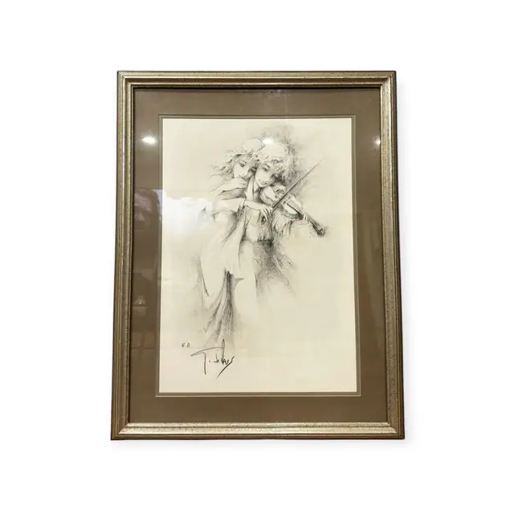
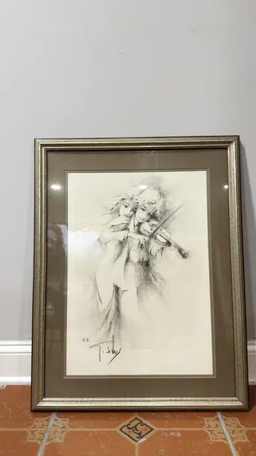
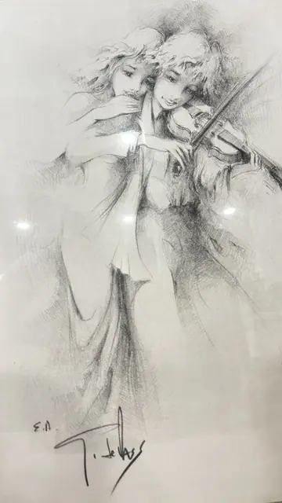

Paintings & Prints
Artist's Proof Charcoal Study of Violinist and Companion, Signed in the Plate, Framed
· late 20th century
Price Upon Request



About the Item
A tall monochrome study of two slender figures pressed close together, the rear one drawing a bow across a violin while the other leans back with her hair falling in long strokes. The drawing is built from feathery charcoal hatching that leaves the faces smooth and pale and dissolves the gown into loose vertical sweeps at the hem. The paper is left bare around the figures so the group floats without background. Medium: lithograph after a charcoal drawing, on paper. Signed lower left of the sheet, in ink, reading "E.A.". Edition: E.A. (epreuve d'artiste / artist's proof). Inscribed on the reverse or mount: E.A.. Condition: Reflections and a soft haze on the glazing; no visible foxing, tears or losses.
Details
- Creation Year:
- late 20th century
- Dimensions:
- Height: 31.0 in (78.74 cm)
Width: 24.0 in (60.96 cm)
outside of frame - Medium:
- lithograph after a charcoal drawing, on paper
- Edition:
- E.A. (epreuve d'artiste / artist's proof)
- Period:
- 20Th
- Condition:
- Offered in the condition shown in the photographs.
- Reference Number:
- VO-187
- Documentation:
- no certificate seen
- Gallery Location:
- E.A.